1 · Samen
Ein kompakter Olivenkern, teilweise im Boden eingebettet.
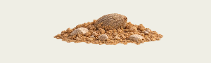
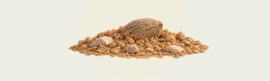


2 · Keimling
Ein zarter Spross mit zwei Blattpaaren und kleiner Spitze.
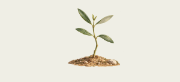


3 · Junger Olivenbaum
Ein schlanker junger Stamm und erste lockere Äste.
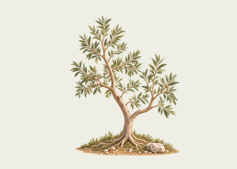
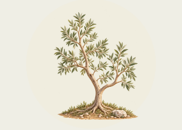


4 · Wachsender Olivenbaum
Ein breiterer S-Stamm, mehr Zweige und größere Blattmasse.
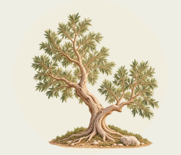


5 · Starker Olivenbaum
Eine breite niedrige Krone und kräftigere Wurzeln; noch keine Früchte.
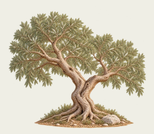
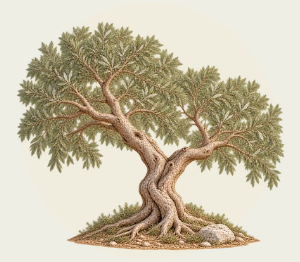


6 · Erste Früchte
Höhere linke Leittriebe, ein tiefer rechter Astbogen und wenige Fruchtgruppen.
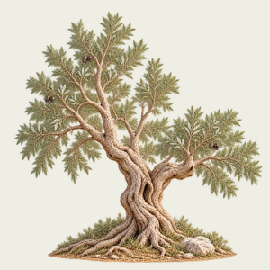
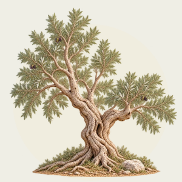


7 · Fruchttragender Olivenbaum
Eine reife, unregelmäßige Krone und mehr Früchte. Das ursprüngliche Abschlussmotiv bleibt erhalten.
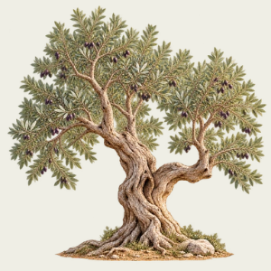
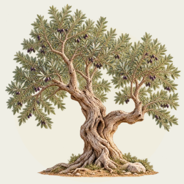